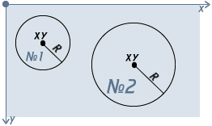
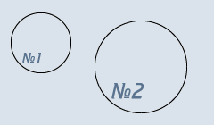

Учебник по Html для чайников. Простейшие.Ступенька 18-ая.С прямоугольными областями мы разобрались, теперь поговорим о других. Для начала о круглых:  Укажем тип области:
Для создания круглой области нам будут нужны координаты ее центра (x и y) и длина радиуса (R) в пикселях. Т.е. порядок записи следующий:
<area shape="circle" coords="x,y,R"> Давайте, будем опять работать с геометрической областью №1. В нашем случае координаты для маленького круга будут такие: x=46, y=48; а длина радиуса - R=35. Запишем:
Теперь, когда самое главное записано, пропишем имя карты, куда она ссылается, и привяжем карту к рисунку:
Кстати, для карты мы можем прописать атрибут alt для каждой области, сейчас у нас только одна область, но все равно, пропишем для нее alt:
Теперь при наведении на область №1 будет всплывать подсказка. В нашем случае это будут слова "маленький круг".
Давайте, посмотрим результат (нажмите на первый круг):  Теперь вы самостоятельно сделаете ссылкой второй круг (x=158, y=75, R=53), чтобы закрепить пройденное. А затем следующая ступенька ждет вас.
<<< Ступенька 17-ая: Назад | Далее: Ступенька 19-ая >>>
|
|||||||||||||||||||||